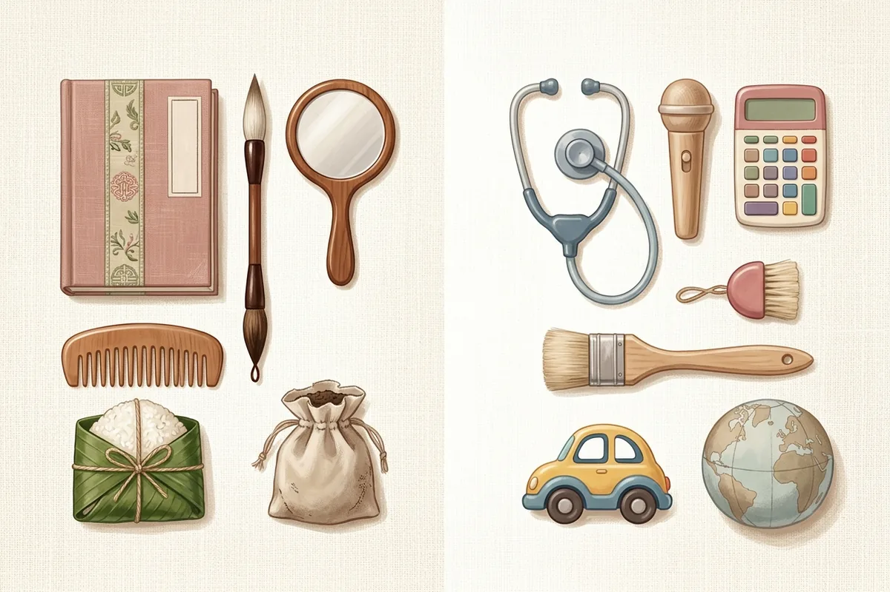
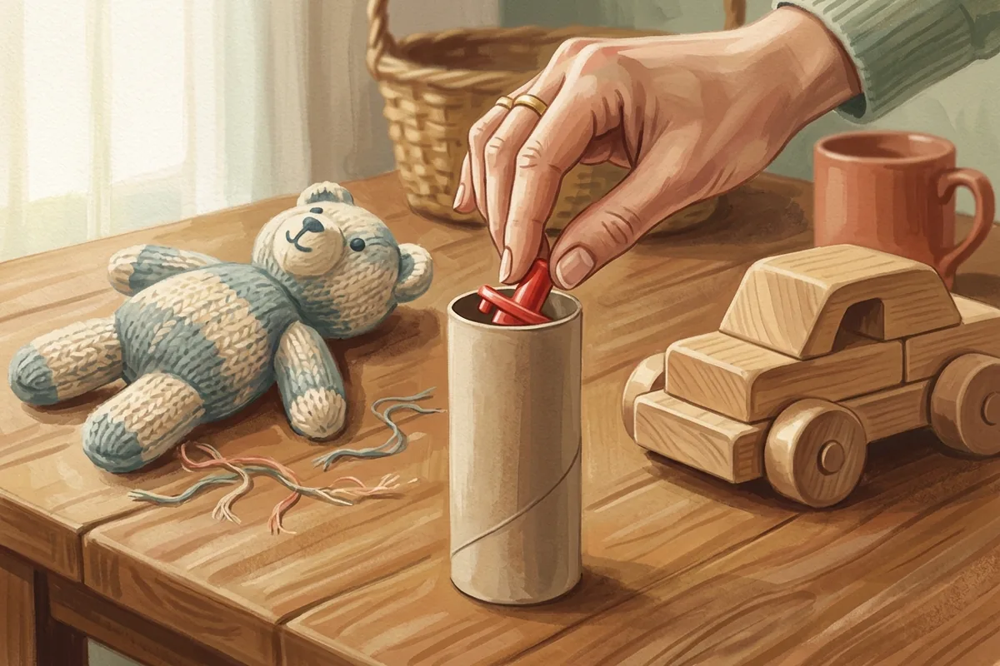

Bốc đồ thôi nôi là nghi thức đặt 8–12 món đồ trước mặt bé tròn 1 tuổi; món bé cầm đầu tiên được cả nhà xem như lời gợi ý về nghề nghiệp, tính cách. Bộ đồ bốc gồm các món quen thuộc như sách, bút, tiền, nắm xôi, ống nghe, micro, quả bóng; có nhà chia riêng bé trai, bé gái, có nhà dùng chung một bộ. Cách bày gói trong 5 bước: chọn món, rửa sạch, bày vòng cung, chọn lúc bé tỉnh, để bé tự bò tới. Điều không được bỏ qua: món nào cũng phải to hơn miệng bé, không sắc, không chứa pin cúc áo hay nam châm. Dưới đây là 20 món kèm lời chúc, cách bày và 6 lưu ý an toàn có nguồn y khoa.
- Thôi nôi là gì — ý nghĩa và trình tự ngày bé tròn 1 tuổi
- Checklist tổ chức thôi nôi tại nhà — từ mâm cúng đến bàn tiệc
- Thiệp mời thôi nôi cho bé — mẫu thiệp online gửi qua Zalo
Bốc đồ thôi nôi là gì, gọi là tục gì?
Bốc đồ thôi nôi, còn gọi là tục chọn nghề, là phần diễn ra sau lễ cúng Mụ: bé bò tới mâm đồ và cầm lấy một món. Tục này cùng gốc với tục “trảo chu” của Trung Hoa, được người Việt giữ lại như một trò chơi mang lời chúc.
Cụ thể, trang Thôi nôi trên Wikipedia tiếng Việt ghi: sau khi cúng mụ, cha mẹ bày đồ vật lên bộ ván, trong mâm hoặc trên bàn, rồi đặt bé ngồi trước để bé tự chọn. Dân gian tin món bé cầm trước gợi ra nghề tương lai. Nghi thức này chỉ là một phần trong chuỗi các nghi thức trong lễ thôi nôi, nhưng là phần khách mời chờ xem nhất.
Nguồn gốc: tục trảo chu của Trung Hoa
Trảo chu (抓周) nghĩa là “bốc đồ lúc tròn năm”. Theo bài tục trảo chu (zhuazhou) trên Wikipedia tiếng Anh, Nhan Chi Thôi đã ghi lại một tục gần giống trong sách Nhan thị gia huấn thời Nam Bắc triều (420–589). Đến thời Thanh, tục này mang tên trảo chu hoặc thí chu, còn phổ biến ở Bắc Kinh tới đầu thời Dân Quốc. Món bày gồm sách, bút, con dấu, bàn tính, tiền, thước, cả hành lá và tỏi — vì chữ “thông” (hành) đồng âm với “thông minh”, chữ “toán” (tỏi) đồng âm với “tính toán”.
Tục tương tự ở Hàn Quốc và Nhật Bản
Cùng nguồn trên ghi nhận tục này lan khắp Đông Á: người Hàn gọi là doljabi, diễn ra trong tiệc thôi nôi doljanchi; người Nhật gọi là erabitori. Nhờ vậy, khi xem video bốc đồ của gia đình Hàn trên mạng, bạn sẽ thấy cách bày gần như y hệt mâm Việt.
Danh sách truyền thống ở Việt Nam
Bản liệt kê trên Wikipedia tiếng Việt gồm 8 món: gương, lược, viết, tập sách, nắm xôi, tiền, kéo, đất. Có nơi bày trên bộ ván gỗ, có nơi bày trong mâm, có nơi bày trên bàn. Ở chung cư, trải một tấm thảm xuống sàn là đủ cho bé bò êm.
Bốc đồ thôi nôi = bé chọn một món trên mâm sau lễ cúng Mụ. Gốc từ tục trảo chu, Hàn Quốc có doljabi, Nhật có erabitori. Kết quả là lời chúc, không phải lời tiên đoán.
Đồ bốc thôi nôi gồm những gì? 20 món và ý nghĩa
Đồ bốc thôi nôi gồm 20 món gợi ý, chia 2 nhóm: 8 món truyền thống (sách, bút, tiền, nắm xôi, gương, lược, kéo, đất) và 12 món hiện đại (ống nghe, micro, máy tính bỏ túi, bóng, xe, cọ vẽ…). Mỗi món đi kèm một lời chúc.

Nhóm truyền thống lấy đúng danh sách Wikipedia tiếng Việt. Nhóm hiện đại là đồ chơi mô phỏng nghề mới. Vài món trùng ý với mâm trảo chu: ống nghe gắn với nghề bác sĩ, tiền gắn với sự giàu có. Cột “lời chúc” dưới đây viết theo kiểu gửi gắm, vì không món nào quyết định tương lai của bé.
8 món truyền thống
| Món | Lời chúc gửi kèm | Cách chuẩn bị an toàn | Mức an toàn |
|---|---|---|---|
| Sách | Con ham học, mê đọc | Sách vải hoặc sách bìa cứng bo góc | Dùng được |
| Bút | Con viết hay, chữ đẹp | Bút lông cán to hoặc bút sáp loại to, không nắp rời | Thay bản an toàn |
| Tiền | Con đủ đầy, biết giữ tiền | Tiền giấy trong phong bao đỏ, không dùng tiền xu | Thay bản an toàn |
| Nắm xôi | Con no đủ, khoẻ mạnh | Nắm to bằng nắm tay người lớn, gói kín lá chuối | Kiểm kỹ |
| Gương | Con chỉn chu, tự tin | Gương nhựa đồ chơi, không mép kính | Thay bản an toàn |
| Lược | Con gọn gàng, khéo léo | Lược nhựa bản to, răng thưa, không gãy răng | Dùng được |
| Kéo | Con khéo tay | Kéo nhựa đầu tròn cho trẻ, hoặc bỏ hẳn | Bỏ hoặc thay |
| Đất | Con có nhà cửa, gắn bó quê nhà | Đất khô trong túi vải khâu kín miệng | Thay bản an toàn |
12 món hiện đại
| Món | Lời chúc gửi kèm | Cách chuẩn bị an toàn | Mức an toàn |
|---|---|---|---|
| Ống nghe | Con thương người, giỏi chăm sóc | Ống nghe đồ chơi nhựa, dây ngắn | Kiểm kỹ |
| Micro | Con tự tin trước đám đông | Micro gỗ liền khối, không pin cúc áo | Kiểm kỹ |
| Máy tính bỏ túi | Con giỏi tính toán | Máy tính đồ chơi, nắp pin vặn vít | Kiểm kỹ |
| Bóng | Con khoẻ, mê vận động | Bóng vải to hơn nắm tay, không dùng bóng bay | Dùng được |
| Xe đồ chơi | Con đi xa, ham khám phá | Xe nhựa cỡ to, bánh liền thân | Kiểm kỹ |
| Cọ vẽ | Con có mắt thẩm mỹ | Cọ cán to, lông chắc, chưa dính màu | Dùng được |
| Chuột máy tính | Con giỏi công nghệ | Chuột cũ đã cắt dây hoặc tháo pin, dán kín nắp | Kiểm kỹ |
| Tai nghe | Con yêu âm nhạc | Tai nghe chụp tai không dây; bỏ loại nhét tai | Kiểm kỹ |
| Thước | Con cẩn thận, công bằng | Thước gỗ bản to thay cho thước dây | Thay bản an toàn |
| Quả địa cầu | Con đi nhiều nơi | Bóng vải in bản đồ, không đế kim loại | Thay bản an toàn |
| Bàn phím đồ chơi | Con nhanh nhạy với máy tính | Phím liền khối, nắp pin vặn vít | Kiểm kỹ |
| Búa đồ chơi | Con khéo xây dựng, sửa chữa | Búa nhựa rỗng hoặc búa vải | Dùng được |
Khi bé cầm một món, cả nhà đọc to lời chúc tương ứng. Ví dụ bé cầm cọ vẽ: “Chúc con lớn lên luôn thấy cái đẹp quanh mình.” Câu chúc như vậy vui hơn câu “con sẽ làm hoạ sĩ”, và không đặt gánh nặng nào lên bé.
Đồ bốc thôi nôi cho bé trai và bé gái khác gì?
Không có quy định riêng. Danh sách truyền thống trên Wikipedia tiếng Việt là một bộ chung cho mọi bé; có nhà tách bộ theo giới, có nhà dùng chung một bộ để bé tự chọn.
Ngược lại với danh sách gốc, nhiều bài hướng dẫn mua sắm trên mạng hiện chia hai bộ bé trai, bé gái. Bảng dưới gợi ý hai cách gom 10 món để gia đình chọn.
| # | Bộ truyền thống (hợp ý ông bà) | Bộ trung tính (dùng chung trai – gái) |
|---|---|---|
| 1 | Sách bìa cứng | Sách vải |
| 2 | Bút lông cán to | Bút sáp loại to |
| 3 | Tiền giấy trong phong bao | Tiền giấy trong phong bao |
| 4 | Nắm xôi gói lá | Ống nghe đồ chơi |
| 5 | Gương nhựa | Micro gỗ |
| 6 | Lược nhựa bản to | Máy tính đồ chơi |
| 7 | Kéo nhựa đầu tròn | Bóng vải |
| 8 | Túi vải đựng đất | Xe nhựa cỡ to |
| 9 | Thước gỗ | Cọ vẽ cán to |
| 10 | Bàn tính gỗ đồ chơi, hạt gắn chặt | Bóng vải in bản đồ |
Mỗi thế hệ nhìn mâm đồ theo một kiểu:
- Ông bà muốn đủ gương, lược, kéo, đất như ngày xưa bày cho bố mẹ bé.
- Bố mẹ trẻ muốn bộ trung tính, để bé gái được cầm búa và bé trai được cầm lược.
- Cách dung hoà: lấy 5 món từ cột trái, 5 món từ cột phải. Ông bà vẫn thấy mâm quen, bé vẫn có lựa chọn mới.
Cách bày mâm bốc đồ thôi nôi theo 5 bước
Để bày mâm bốc đồ thôi nôi, chọn 8–12 món, rửa sạch, bày vòng cung trên mâm hoặc thảm cách bé khoảng một sải tay, đặt bé ngồi đối diện rồi để bé tự bò tới. Món bé cầm đầu tiên là kết quả.
Bước 1 — Chọn 8–12 món
Ít hơn 8 món, phần bốc đồ trôi qua quá nhanh. Nhiều hơn 12 món, mâm chật và món nhỏ dễ lọt khỏi tầm mắt người lớn. Có nhà chọn đúng 12 món cho tròn 12 tháng; con số này là lựa chọn của gia đình, không phải luật.
Bước 2 — Rửa và kiểm từng món
Bé 1 tuổi đưa gần như mọi thứ lên miệng. Vì thế, rửa từng món bằng xà phòng, lau khô, rồi kiểm theo 6 lưu ý an toàn ở mục sau.
Bước 3 — Bày vòng cung, cách đều
Xếp các món thành nửa vòng tròn quanh chỗ bé ngồi, khoảng cách giữa các món đều nhau. Đừng đặt món cả nhà mong bé chọn sát tay bé hơn món khác. Mâm lệch thì kết quả chẳng còn vui.
Bước 4 — Chọn thời điểm
Theo Wikipedia tiếng Việt, phần chọn nghề diễn ra sau khi cúng mụ xong; bạn có thể xem cách sắp mâm cúng Bà Mụ để lên lịch cả buổi. Có nơi cúng vào giờ Ngọ, tức 12 giờ trưa, dễ trùng giờ ngủ trưa của bé. Cho bé ăn no và ngủ một giấc ngắn trước, bé tỉnh thì bò hăng hơn.
Bước 5 — Phân vai người lớn
Cần đúng 3 vai: một người ngồi sát bé, một người quay video, một người dẫn. Người dẫn là ông hoặc bà thì không khí ấm hơn. Câu dẫn mẫu:
“Cả nhà mình cùng xem con chọn món gì nhé. Con cầm món nào, ông bà gửi lời chúc theo món ấy.”— câu dẫn gợi ý cho ông bà
Lưu ý an toàn khi cho bé 1 tuổi bốc đồ
Loại mọi vật lọt được ống thử đường kính 31,7 mm (khoảng 3,17 cm), vật sắc, pin cúc áo, nam châm, tiền xu và bóng bay. Một người lớn ngồi sát bé suốt nghi thức.

Con số 31,7 mm đến từ quy định small parts của Uỷ ban An toàn Sản phẩm Tiêu dùng Hoa Kỳ (CPSC), mục 16 CFR 1501. Quy định này cấm đồ chơi cho trẻ dưới 3 tuổi có chi tiết lọt trọn ống thử, vì ống mô phỏng cổ họng mở hết cỡ của trẻ dưới 3 tuổi. Ống rộng 1,25 inch, sâu 1–2,25 inch, theo một nghiên cứu trên International Journal of Pediatrics (2017). Ở nhà không có ống thử, bạn dùng lõi cuộn giấy vệ sinh: món nào lọt vừa lõi thì quá nhỏ với bé, theo The Children’s Trust (2024).
Từ đó, 6 việc cần làm trước khi bé ngồi vào mâm:
- Loại mọi món hoặc chi tiết lọt vừa lõi giấy: nắp bút, bánh xe rời, hạt cườm, thỏi vàng đồ chơi cỡ nhỏ.
- Thay đồ sắc, dễ vỡ bằng bản nhựa: gương kính thành gương nhựa, kéo thật thành kéo nhựa đầu tròn.
- Rửa và lau khô từng món, vì bé sẽ đưa đồ lên miệng.
- Kiểm pin và nam châm. Viện Nhi khoa Hoa Kỳ (AAP, 2024) lưu ý đồ chơi có pin cúc áo, pin lithium dạng đồng xu và nam châm mạnh; nắp pin phải vặn vít.
- Ngồi sát bé, trong tầm với tay, từ lúc bé chạm món đầu tiên đến lúc dọn mâm.
- Cất tiền xu, bóng bay, ruy băng. Theo khuyến cáo phòng hóc dị vật của Viện Nhi khoa Hoa Kỳ (cập nhật 02/2026), tiền xu thuộc nhóm đồ giữ xa trẻ, bóng bay gây hóc cho trẻ đến 8 tuổi; pin cúc áo nuốt phải còn gây bỏng bên trong.
Đừng đặt nhẫn, lắc vàng thật hay tiền xu lên mâm cho “có lộc”. Món quý tặng bé sau nghi thức, khi bé đã rời mâm.
Nội dung an toàn trên mang tính tham khảo, tổng hợp từ khuyến cáo của AAP và CPSC. Bé có dấu hiệu hóc, ho sặc hay khó thở, gọi ngay cấp cứu 115.
Tuy nhiên, bốc đồ chỉ là trò chơi — kết quả không nói gì về tương lai thật của bé.
Bé không chịu bốc hoặc bốc trúng món “không mong muốn” thì sao?
Không sao cả. Bốc đồ là trò chơi mang lời chúc, không có giá trị dự báo. Cho bé bốc lại lần hai, hoặc coi món bé chọn là “sở thích hôm nay” rồi chuyển sang cắt bánh.
Bé 1 tuổi có khi khóc vì đông người, có khi bò thẳng tới chân mẹ, có khi ôm cả nắm xôi không buông. Mỗi người trong nhà đón khoảnh khắc ấy khác nhau:
- Ông bà có kỳ vọng riêng. Gợi ý cho ông bà một câu chúc theo món bé chọn, thay vì bình luận “món này không hay”.
- Bố mẹ không muốn áp đặt. Bé không bốc thì bế bé lên, cười, chuyển phần tiếp theo.
- Khách mời thích nhất khoảnh khắc này. Quay một video dọc 15–30 giây, gửi vào nhóm gia đình ngay tối đó.
Sau bốc đồ là phần tiệc; bạn xem trình tự cả ngày trong bài tổ chức thôi nôi tại nhà. Muốn khách đến đúng giờ bốc đồ, ghi rõ giờ này trong lời mời thôi nôi qua tin nhắn.
Mời cả nhà nội ngoại cùng xem bé bốc đồ
Gửi thiệp online có đếm ngược, album ảnh bé và bản đồ đường đi — khách bấm xác nhận ngay trên điện thoại. Xem thử mẫu thiệp thôi nôi Bunny & Cloud hoặc Bé Mimi.
Mua đồ bốc thôi nôi ở đâu hay tự chuẩn bị?
Bộ bán sẵn tiện nhưng dễ lẫn chi tiết nhỏ; tự gom đồ trong nhà rẻ hơn và kiểm soát an toàn tốt hơn.
| Tiêu chí | Bộ bán sẵn | Tự gom trong nhà |
|---|---|---|
| Thời gian chuẩn bị | Đặt một lần là xong | Mất một buổi tìm và rửa |
| An toàn | Phải tự kiểm lại từng món | Chọn được món to, chắc ngay từ đầu |
| Hình ảnh | Đồng bộ màu, lên ảnh gọn | Ít đồng bộ hơn |
| Câu chuyện | Giống nhiều nhà khác | Có đồ riêng của bố mẹ |
Đặc biệt, đồ của bố mẹ biến mâm thành câu chuyện riêng: cây bút bố dùng hằng ngày, cuốn sách mẹ đọc khi mang bầu. Bé cầm trúng món ấy, cả nhà có chuyện kể lại nhiều năm. Mua bộ có sẵn cũng được, miễn qua đủ phép thử lõi giấy ở mục an toàn.
Câu hỏi thường gặp về bốc đồ thôi nôi
Bốc đồ thôi nôi gọi là gì?
Bốc đồ thôi nôi cần bao nhiêu món?
Có nên để tiền xu thật vào mâm bốc đồ không?
Bốc đồ thôi nôi làm lúc nào?
“Bóc đồ thôi nôi” hay “bốc đồ thôi nôi” mới đúng?
Bé bốc trúng món không mong muốn có xui không?
Trước khi in danh sách đồ, bạn có thể lo luôn phần mời khách: xem mẫu thiệp thôi nôi online, mẫu thiệp sinh nhật 1 tuổi cho bé như thiệp Wild One, và bảng giá thiệp mời của Templexa.
Lời cuối
Bốc đồ thôi nôi vui nhất khi mâm an toàn và cả nhà không đặt nặng kết quả. Chuẩn bị 8–12 món to, sạch, không pin cúc áo, bày vòng cung, để một người lớn ngồi sát bé. Bé cầm micro hay nắm xôi đều đáng một tràng vỗ tay — điều đáng giữ là đoạn video năm giây bé bò về phía mâm, chứ không phải món đồ trong tay.
Templexa
Đội ngũ làm thiệp mời online tại Templexa — thiệp cưới, thôi nôi, sinh nhật — viết lại những gì đã học được khi chuẩn bị ngày vui cùng các gia đình trong Cẩm nang.